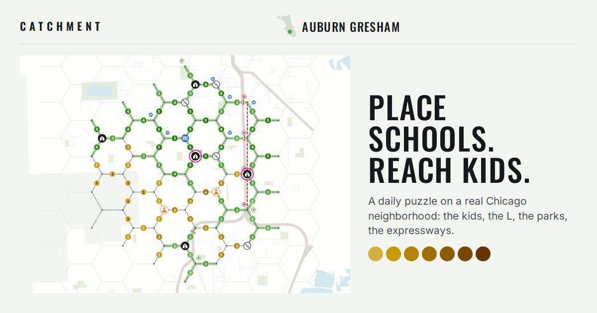

Henry Heligas
Economist · Designer · Educator · Builder
Games and design about how cities work: where schools go, how kids get there, and who decides.

Daily puzzle · Chicago
Catchment
Each day, a real Chicago neighborhood and a handful of schools. Place them to reach as many kids as you can, around the L, the parks and the expressways.
Play today's boardThe Student Shuffle
A board game about urban school district planning, built for the Chicago Architecture Biennial and installed at the Thompson Center. Every piece was scaled from real conditions in Chicago: one point for every hundred school-age kids, one street for every half-mile walk. Catchment is its first digital game.